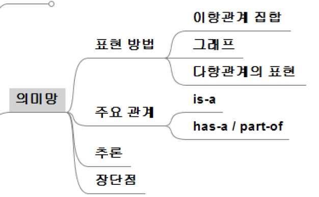

14th
의미망 (semantic network)

지식을 이항관계 (binary relation)의 집합으로 표현
노드와 방향성 간선으로 구성되는 그래프를 사용해 지식 표현
- 노드 (node)
- 대상, 개념, 행위, 상태, 사건
- 간선 (edge)
- 관계가 있는 노드를 연결
- 관계에 따른 방향
- 관계의 의미를 나타내는 라벨 부여

의미망에서 사용되는 관계 (relationship)
is-a
상위 클래스와 하위 클래스 관계 (ex. is-a(조류, 동물)) 또는 클래스와 객체의 관계 (ex. is-a(트위티, 종달새))를 나타내어 계층관계 표현
사우이 계층의 속성을 상속
추이적(transitive) 관계 만족
\[ is-a(X, Y) \land is-a(Y, Z) \to is-a(X, Z) \]
\[ is-a(펭귄, 조류) \land is-a(조류, 동물) \to is-a(펭귄,동물) \]
has-a
전체-부분 관계
part-of와 역관계
- has-a(X, Y)이면 part-of(Y, X) 성립
추이적 관계 만족
\[ has-a(X, Y) \land has-a(Y, Z) \to has-a(X, Z) \]
\[ part-of(X, Y) \land part-of(Y, Z) \to part-of(X, Z) \]
다항관계를 이항관계로 전개하여 표현한 의미망
의미망은 이항관계만을 표현
다항관계는 relationship을 object로 간주하여 표현 - 사물화 (reification)

의미망의 추론
상속(inheritance)을 이용
질문에 대한 의미망과 지식을 나타내는 의미망을 비교

디폴트값(default value, 기본값)을 이용한 추론
상속관계 이용

주어진 지식으로부터 새로운 사실을 이끌어내는 추론도 가능
규칙의 의미망 표현

의미망과 프레임
의미망의 프레임으로의 변환
- 노드별로 프레임 생성
- 노드에서 나가는 간선들을 slot으로 구성

장점
지식을 시각적으로 표현할 수 있어 직관적 이해 용이
노드 추가 또는 변경으로 비교적 쉽게 지식의 추가 및 변경 가능
개념의 계층관계를 정의하여 속성의 상속관계 지정 가능
복잡한 지식을 구조화하여 표현 가능
단점
지식의 양이 많아지면 관리 복잡
개념이나 관계를 임의로 정의하기 때문에 통일성이 부족
공유나 재사용에 대한 고려 없음
논리적 결합 관계나 인과관계를 기술하려고 하면 and, or, implies와 같은 링크 도입 필요
- 일관성을 떨어뜨리고 추론과정을 복잡하게 만듦
기본적으로 정적인 지식의 표현
- 추론 과정에서 동적으로 지식의 내용을 바꾸려면 그래프를 동적으로 바꿀 수 있도록 해야 함
스크립트 (script)
일반적으로 발생할 수 있는 전형적인 상황에 대한 절차적 지식을 일목요연하게 표현
전형적인 상황에서 일어나는 일련의 사건(event)을 시간적 순서를 고려하여 기술하는 프레임과 같은 구조의 지식 표현
구성요소
진입조건 (entry conditions) - 스크립트에 기술된 사건들이 일어나기 전에 만족되어야 하는 전제조건
역할자 (roles) - 스크립트에 관련된 사람 및 대상
자산 (properties) - 사건 진행 과정에서 사용되는 객체
트랙 (track) - 어떤 스크립트에서 발생할 수 있는 일련의 사건들이 변형된 형태 식별자
장면 (scenes) - 실제 일어나는 일련의 사건
결과조건 (results) - 스크립트의 장면에 있는 사건들이 일어난 이후에 만족되는 조건